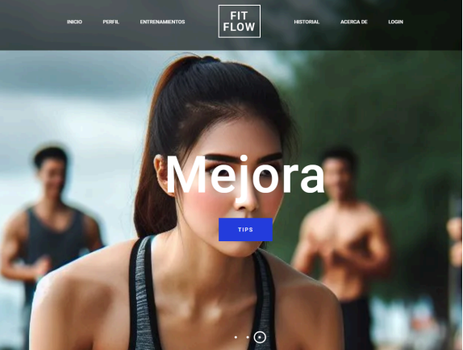
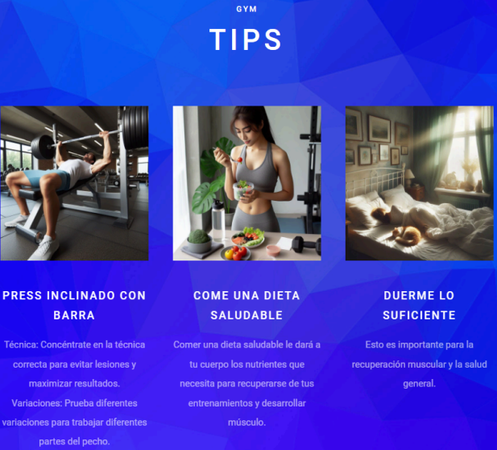
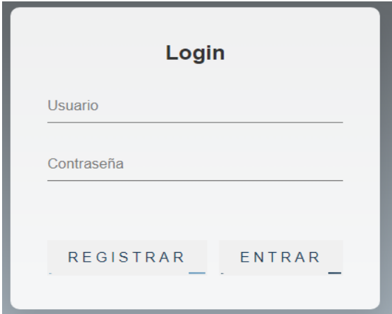
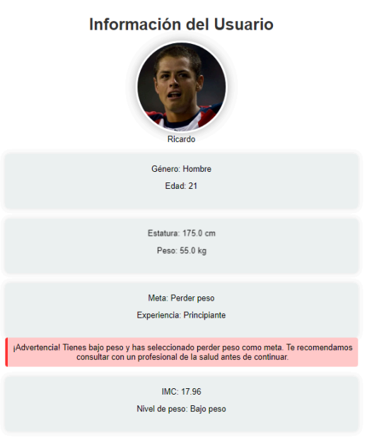
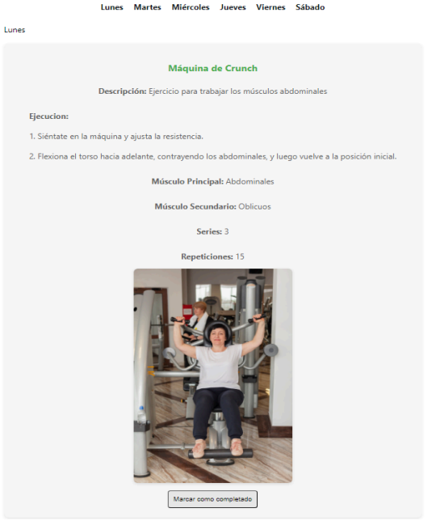

proyecto — dic 2023
Plataforma responsive que recomienda rutinas de ejercicio personalizadas según los objetivos del usuario, con backend en MySQL.
Sitio web completamente responsivo desarrollado en colaboración con Alan Gabriel Haro López. Adapta su interfaz a móviles, tablets y escritorio usando CSS Grid y Flexbox modernos.
Cuenta con sistema de login, perfiles de usuario y conexión a base de datos MySQL para almacenar y recuperar rutinas personalizadas según el objetivo fitness del usuario.





El sitio se adapta perfectamente a móviles, tablets y pantallas grandes con layouts fluidos usando Grid y Flexbox.
Integración MySQL para almacenar perfiles de usuario y generar recomendaciones personalizadas según objetivo y nivel.
Registro e inicio de sesión con PHP, sesiones persistentes y perfiles individuales para cada usuario registrado.